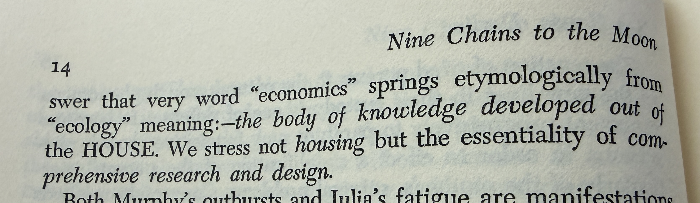

Nine Chains · Vignette 3
Economics, Ecology,
and the House
A reading conversation between Buckminster Fuller, Alfredo Mathew, and AI—on the shared household of economics and ecology, comprehensive design, and Spaceship Earth.

Alfredo
Interpretation
I have always been fascinated by etymology—where words spring from, and how exploring their histories can unlock their meanings.
Fuller connects economics and ecology to the body of knowledge developed out of the house. He is not thinking narrowly about housing. He is pointing toward comprehensive research and design: understanding the whole system within which the household exists.
Economics fascinates me now in a way that it did not earlier in my life. I see the economy as one of the central things we are struggling to understand and grapple with: how resources, labor, power, value, and survival are organized.
Ecology asks us to recognize that we live inside a living system and are completely interdependent. Nothing in the house survives independently of the house.
Fuller will develop this through Spaceship Earth: the planet as a circular vessel traveling through space. His project is comprehensive research and design about the universe from the perspective available to us here, aboard Earth. That is the first idea this passage stimulates for me.
AI
Synthesis
The two words share a conceptual household. Economics descends from the Greek idea of household management; ecology joins that same root—oikos, house or dwelling—to the study of its relationships. One asks how the household is administered. The other asks how the household lives.
Modern practice separated them. Economics often treats the living world as an external resource or cost, while ecology describes the interdependence that makes every economy possible. Fuller’s etymological reunion exposes the absurdity: management of the house cannot remain detached from knowledge of the house.
Spaceship Earth intensifies the point because there is no external warehouse, labor colony, landfill, or atmosphere. Every extraction and disposal remains inside the vessel. The economy is not a machine operating upon ecology; it is one pattern of circulation within ecology.
Comprehensive design is therefore not the accumulation of all available facts. It is the capacity to perceive consequences across boundaries that specialized institutions keep apart: finance from soil, production from labor, consumption from waste, and private wealth from shared survival.
Economics tells us how we manage the house.
Ecology reminds us that the house is alive—and that no one lives outside it.